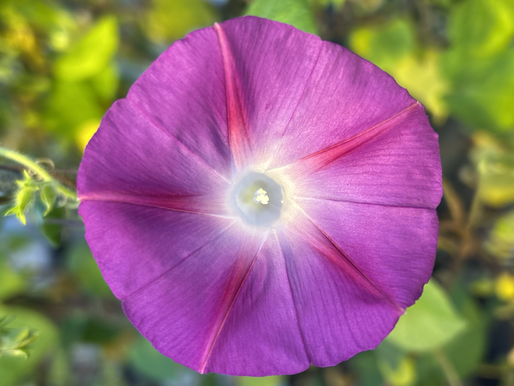
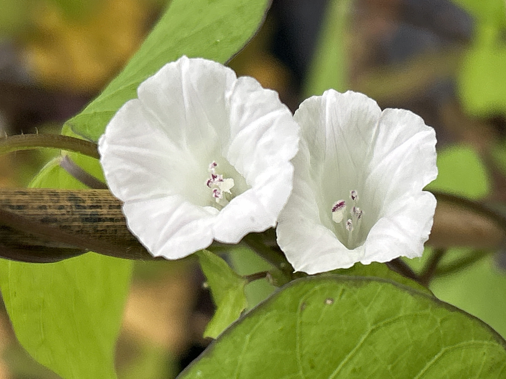

Investigating the Genetic Basis of Phenotypic Diversity in Mutagenized Morning Glories (Ipomoea)
The Big Picture
My research explores how differences in DNA influence the traits of morning glories (Ipomoea). Using DNA sequencing and computer-based tools, I an charactorizing changes in a plant's genetic code that may lead to differences in characteristics such as flower size, leaf shape, and growth. This research can help us better understand plant diversity, improve our knowledge of important crops (like sweet potatoes), and uncover the genetic changes behind traits that make each plant unique.
Research Projects
Ipomoea purpurea: Characterize the mutational landscape induced by Fast Neutron irradiation
As part of a broader effort to establish Ipomoea as a model system for plant genetics, my research investigates the mutational landscape of Ipomoea purpurea following fast-neutron (FN) mutagenesis. We generated mutant populations exposed to three irradiation doses (5, 10, and 30 Gy), introducing a range of mutations that may underlie observable mutant phenotypes. Native to tropical and subtropical regions worldwide, I. purpurea is a widespread morning glory with notable weedy characteristics. Although its competitive growth can negatively impact agricultural crop yields, these same characteristics make it a valuable system for investigating questions related to genetic diversity, adaptation, and evolution.
I plan to integrate mutation data with observed mutant phenotypes, including variation in leaf morphology, flower size, and trichome characteristics, to investigate the relationship between genotype and phenotype. Following characterization of FN-induced mutations, I aim to identify and evaluate candidate genes that overlap with or occur near detected mutations. Ultimately, this work will expand the genetic resources available for Ipomoea and provide a foundation for future research in crop science, plant biology, ecology, and evolution.

Ipomoea lacunosa: Characterize the mutational landscape induced by Fast Neutron irradiation
Because one morning glory species is never enough, my research also extends to Ipomoea lacunosa! Similar to my work in I. purpurea, I am investigating the mutations induced by FN irradiation (5, 10, and 30 Gy). I. lacunosa is closely related to a significant crop, sweet potatoes. Interestingly, sweet potatoes are genetically complex. They have six copies of each chromosome, making it more challenging to identify which genetic changes are responsible for particular traits. I. lacunosa, on the other hand, has just two copies of each chromosome and a smaller genome, making it a simpler system for identifying genetic differences and investigating how they relate to plant traits.
With this project, I also plan to integrate mutation data with observed mutant phenotypes, investigating the relationship between genotype and phenotype. I aim to also identify and evaluate candidate genes that overlap with or occur near detected mutations. This work will further add to the genetic resources available for Ipomoea!!!
